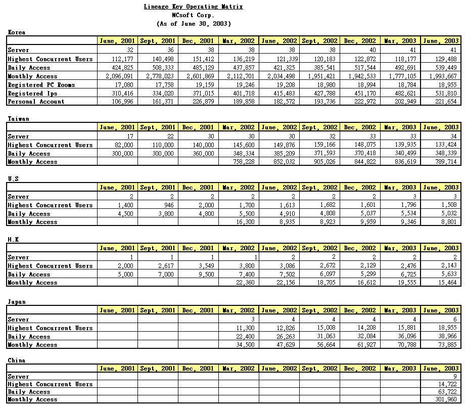
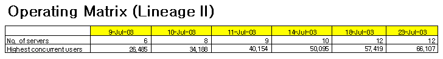

|
2003年8月2日
各地天堂在2003年第二季的人數統計資料
來源：韓國NCSoft官方網站投資者報告(Excel，PowerPoint)
NCSoft最近公佈了2003年第二季投資者相關文件，當中各地的天堂上線人數統計如下：

當中可以看到香港伺服器在開放第二個伺服器後，人數漸漸下降，目前人數比只有一個伺服器時還少呢，天堂在香港風光不再了。筆者認為香港天堂最失敗的兩個決策是：一、在玩家人數不足夠的情況下開放了第二個伺服器，引致在野勢力跳轉伺服器，造成遊戲的核心攻城戰大幅減少，長遠令天堂失去了對玩家的漿力；二、在未經完全測試後，便將伺服器轉移住穩定較差的網路服務供應商，以致玩家經常斷線而死亡，玩家在不明不白地死亡多次後，還會繼續玩嗎？第一個決策已經造成了無可救藥的損失，至於第二個決策，目前還有解決的辦法，就是官方立即更換穩定性較好的網路服務供應商。（今天約16:25左右又大斷了．．．）
另外在文件中亦有統計Lineage II在公開測試後的同時上線人數：

在上圖中可見每個Lineage II伺服器大約可以最多容納5000名玩家，而且在Lineage
II公開測試不欠，其最大同時線上人數已經達到Lineage的一半，Lineage
II真是魅力無限！ |